¶ Here are some exploded views of different motorcycle front forks for you to study. I will try to add more as time allows.
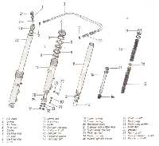 1981 Honda Goldwing Fork |
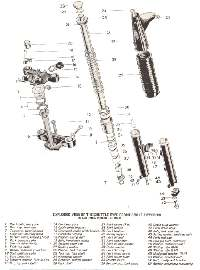 Pre 1970 BSA Fork |
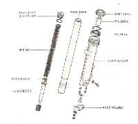 CBX Honda Fork |
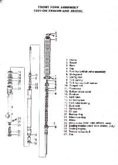 Honda XR600R Fork |
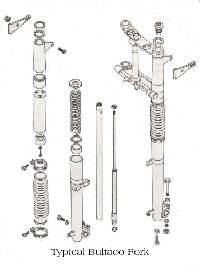 Typical Bultaco Fork |
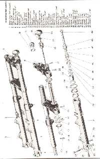 Ceriani Fork |
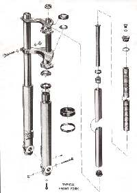 Typical Husquvarna Fork |
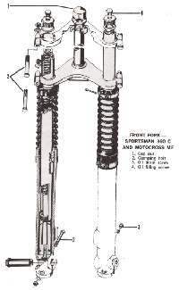 Husquvarna 360 Fork |
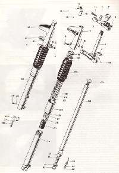 Triumph Fork |
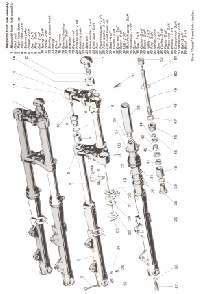 Marzocchi Fork |
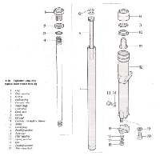 Harley Davidson, Big Twin, Early 1990s. |
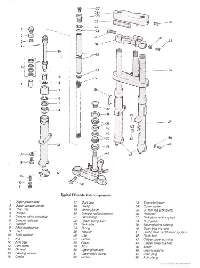 Harley Davidson FX Fork |

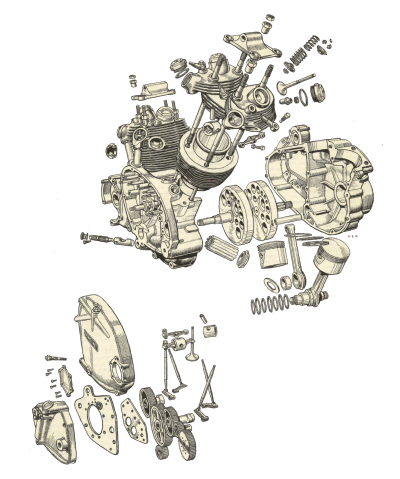 |
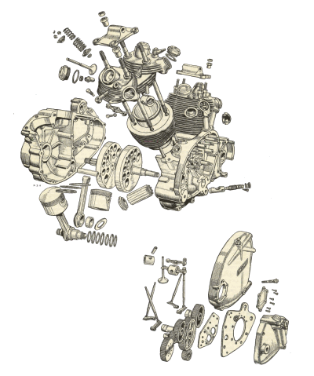 |
Copyright © 1999-2000 dansmc.com. All rights reserved.